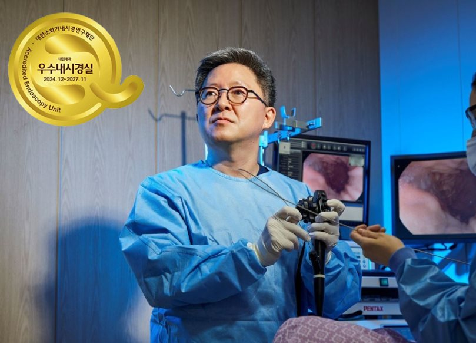

금천구 최초·유일 인증
금천구 대장내시경·위내시경
우수내시경실 인증 내시경센터
소화기내시경 세부전문의가 위·대장내시경과 대장용종절제술을 시행합니다
대한소화기내시경학회 우수내시경실 인증 · 인증기간 2024.12~2027.11
아래의 6개영역 123개의 항목을 심사하여 모두 통과한 경우에만 인증이 가능한
매우 엄격하고 까다로운 인증제도입니다.
대학병원 및 종합병원을 제외하면 인근 금천구, 구로구, 영등포구, 양천구, 동작구, 서초구, 경기도 시흥, 광명등을 통틀어 우수내시경실 인증을 받은 1차 의료기관은 내일내과의원
단 1곳 뿐입니다.

2012년 우수내시경실 인증제 도입 이후 지금까지 우수내시경실 인증을 받은 병의원은 전국 7만여 병의원 중에서 190여곳에 불과하며, 대부분 대학병원과 대형 종합병원입니다.
의원급 인증을 받은 곳은 서울에서 단 13곳뿐이며, 금천구에서는 내일내과의원이 최초이자 유일합니다.
내일내과는 금천구를 넘어 서울시와 전국 내시경센터의 올바른 표준이 되고, 대한민국 내시경 수준의 상향 평준화를 위해 스스로 채찍질하며 달려나가겠습니다.
대한소화기내시경학회 인증 '우수내시경실' 인증 평가항목
내시경실 근무자 자격(인력) 평가
내시경실 필수 인력
내시경 의사의 자격유지 (연간시술건수)
내시경 간호 인력의 교육
신규 내시경 장비 및 기기 도입 시 이에 대한 교육 프로그램
내시경 의사의 자격유지 (연간시술건수)
내시경 간호 인력의 교육
신규 내시경 장비 및 기기 도입 시 이에 대한 교육 프로그램
시설 및 장비 평가
내시경 및 부속기구 관리, 유지보수
시설 및 공간 규정 - 화장실, 탈의실, 대기실, 회복실
응급 구호 장비 및 수검자 감시 체계
시설 및 공간 규정 - 화장실, 탈의실, 대기실, 회복실
응급 구호 장비 및 수검자 감시 체계
내시경 과정 평가
설명과 동의-각종 양식과 권장서식 사용
검사과정-표준 촬영부위, 우발증 대처법
검사결과-결과설명 방법, 조직검사와 기구에 대한 관리기록
검사과정-표준 촬영부위, 우발증 대처법
검사결과-결과설명 방법, 조직검사와 기구에 대한 관리기록
성과지표 평가
시술별 지표 - 판독지 (병변기술법, 필수 항목표시여부)
종적 지표 - 내시경시행통계, 조직검사 통계, 우발증에 대한 월별통계
종적 지표 - 내시경시행통계, 조직검사 통계, 우발증에 대한 월별통계
소독 및 감염 관리 평가
의사, 간호인력 소독교육 확인
세척,소독,헹굼,건조,보관 지침
내시경 부속물 관리 지침
공간/시설/개인장비/소독관리장부 지침
감염 관리 및 소독 관련 규정 확인
세척,소독,헹굼,건조,보관 지침
내시경 부속물 관리 지침
공간/시설/개인장비/소독관리장부 지침
감염 관리 및 소독 관련 규정 확인
진정 평가
시술전 평가-수검자 과거력, 신체상태
검사중 활력징후 기록과 약제투여 기록, 진정약물 사용지침, 직원 교육기록
회복실 퇴실기준, 마약류 관리
검사중 활력징후 기록과 약제투여 기록, 진정약물 사용지침, 직원 교육기록
회복실 퇴실기준, 마약류 관리
내일내과 내시경센터가 왜 최고일까요?
1. 내시경에 관한 최고 전문가그룹 (우수내시경실 인증)
내일내과 원장단 = (의사 + 내과전문의 + 소화기내과 분과전임의 + 소화기내시경 세부전문의)
2. 대한 소화기내시경학회의 지침을 준수
정기적 국가 인증평가를 실시하고 최상위 평가를 유지하는 내시경 센터. 일회용품을 사용하고 철저한 소독으로 위생적인 내시경 센터
3. 내시경 결과를 직접 설명
결과만 발송하는 검진센터와 달리 내과 주치의가 직접 설명과 상담, 처방을 진행합니다.
4. 복통과 부작용을 줄인 CO2 내시경도입
일반 공기보다 흡수가 200배 빠른 CO2 가스를 이용한 내시경 = (검사 후 복통을 획기적 감소 + 회복시간 단축)
5. 모든 수면내시경 환자에게 산소제공
일부 내시경센터에서는 저산소증이 발생할 때만 산소를 투여하고 그것도 앞사람이 쓰던 산소줄을 사용합니다. 본원에서는 모든 수면환자에게 1회용 산소 캐눌라를 사용하고, 저산소증이 없어도 모든 환자에게 예방적 산소를 투여합니다.
유의사항
용종절제술이나 조직검사 등으로 검사 시간이 길어질 수 있어, 검사 예약 시 대기 시간이 발생할 수 있습니다.